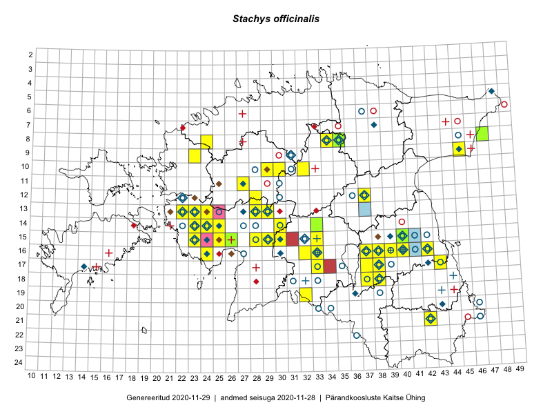

Stachys officinalis
Uuendatud: 2016-12-08
Kaardile koondatud taksonid: Stachys officinalis (L.) Trevis.

Kaart põhineb 71 kirjel, neist vaatlusi 69 ja eksemplare 2. Taksonit on leitud 33 ruudust.
| Ruut | Vaatleja(d) | Vaatlusaeg | Kirje tüüp | Viide andmebaasikirjele |
|---|---|---|---|---|
| 12-28 | Tiit Hallikma, Toomas Kukk, Indrek Tammekänd | 2015-06-09 | ruut/ala | vaata PlutoFis |
| 12-28 | Tiit Hallikma, Toomas Kukk | 2015-06-09 | punkt | vaata PlutoFis |
| 16-40 | Thea Kull | 2015-07-07 | ruut/ala | vaata PlutoFis |
| 09-45 | Peedu Saar, Liina Oja | 2015-07-24 | punkt | vaata PlutoFis |
| 14-30 | Peedu Saar, Liina Oja | 2015-06-10 | punkt | vaata PlutoFis |
| 15-29 | Peedu Saar, Liina Oja | 2015-06-11 | punkt | vaata PlutoFis |
| 15-23 | Ott Luuk, Jaak-Albert Metsoja | 2015-05-27 | ruut/ala | vaata PlutoFis |
| 14-30 | Peedu Saar, Liina Oja | 2015-06-10 | ruut/ala | vaata PlutoFis |
| 15-29 | Peedu Saar, Liina Oja | 2015-06-11 | ruut/ala | vaata PlutoFis |
| 09-45 | Peedu Saar, Liina Oja | 2015-07-24 | ruut/ala | vaata PlutoFis |
| 16-40 | Thea Kull | 2015-07-15 | punkt | vaata PlutoFis |
| 16-40 | Thea Kull | 2015-07-15 | punkt | vaata PlutoFis |
| 16-40 | Thea Kull | 2015-07-26 | punkt | vaata PlutoFis |
| 16-38 | Peedu Saar, Ott Luuk | 2015-09-02 | ruut/ala | vaata PlutoFis |
| 16-38 | Peedu Saar, Ott Luuk | 2015-09-02 | punkt | vaata PlutoFis |
| 16-39 | Thea Kull, Eerik Leibak | 2015-07-03 | ruut/ala | vaata PlutoFis |
| 16-39 | Thea Kull, Eerik Leibak | 2015-07-03 | punkt | vaata PlutoFis |
| 14-24 | Toomas Kukk, Ott Luuk, Sander Laherand | 2014-08-24 | ruut/ala | vaata PlutoFis |
| 15-23 | Indrek Tammekänd | 2015-04-06 | ruut/ala | vaata PlutoFis |
| 18-38 | Toomas Kukk, Sander Laherand, Peedu Saar, Mall Värva | 2014-07-27 | punkt | vaata PlutoFis |
| 16-42 | Peedu Saar | 2015-05-16 | ruut/ala | vaata PlutoFis |
| 08-34 | Jana-Maria Habicht, Ester Valdvee | 2015-07-31 | ruut/ala | vaata PlutoFis |
| 08-35 | Jana-Maria Habicht, Ester Valdvee, Kirke Pilvik | 2015-07-14 | ruut/ala | vaata PlutoFis |
| 14-24 | Indrek Tammekänd | 2015-05-23 | ruut/ala | vaata PlutoFis |
| 15-33 | Maria Abakumova | 2015-07-23 | ruut/ala | vaata PlutoFis |
| 16-33 | Maria Abakumova | 2015-06-25 | ruut/ala | vaata PlutoFis |
| 16-24 | Maret Gerz, Leena Gerz | 2015-08-09 | ruut/ala | vaata PlutoFis |
| 16-24 | Maret Gerz, Leena Gerz | 2015-08-09 | punkt | vaata PlutoFis |
| 16-24 | Maret Gerz, Leena Gerz | 2015-08-09 | punkt | vaata PlutoFis |
| 16-24 | Maret Gerz, Leena Gerz | 2015-08-09 | punkt | vaata PlutoFis |
| 16-24 | Maret Gerz, Leena Gerz | 2015-08-09 | punkt | vaata PlutoFis |
| 08-34 | Jana-Maria Habicht, Ester Valdvee | 2015-07-31 | punkt | vaata PlutoFis |
| 08-34 | Jana-Maria Habicht, Ester Valdvee | 2015-07-31 | punkt | vaata PlutoFis |
| 08-34 | Jana-Maria Habicht, Ester Valdvee | 2015-07-31 | punkt | vaata PlutoFis |
| 17-33 | Maria Abakumova | 2015-06-29 | ruut/ala | vaata PlutoFis |
| 15-25 | Maret Gerz, Leena Gerz | 2015-08-08 | ruut/ala | vaata PlutoFis |
| 15-25 | Maret Gerz, Leena Gerz | 2015-08-08 | punkt | vaata PlutoFis |
| 19-32 | Maria Abakumova, Tiit Hallikma | 2015-07-11 | ruut/ala | vaata PlutoFis |
| 17-33 | Maria Abakumova | 2015-05-14 | ruut/ala | vaata PlutoFis |
| 19-32 | Maria Abakumova, Tiit Hallikma | 2015-07-11 | punkt | vaata PlutoFis |
| 13-23 | Kirsi Loide, Marje Loide | 2015-08-18 | ruut/ala | vaata PlutoFis |
| 13-22 | Kirsi Loide, Marje Loide | 2015-08-10 | ruut/ala | vaata PlutoFis |
| 17-33 | Maria Abakumova | 2015-06-29 | punkt | vaata PlutoFis |
| 16-33 | Maria Abakumova | 2015-06-25 | punkt | vaata PlutoFis |
| 13-28 | Liina Oja, Ott Luuk | 2015-05-09 | punkt | vaata PlutoFis |
| 13-28 | Liina Oja, Ott Luuk | 2015-05-09 | ruut/ala | vaata PlutoFis |
| 15-33 | Maria Abakumova | 2015-07-23 | punkt | vaata PlutoFis |
| 17-33 | Maria Abakumova | 2015-05-14 | punkt | vaata PlutoFis |
| 15-40 | Kadi Palmik, Helle Mäemets | 2015-07-24 | ruut/ala | vaata PlutoFis |
| 15-40 | Kadi Palmik, Helle Mäemets | 2015-07-24 | punkt | vaata PlutoFis |
| 08-47 | Thea Kull, Peedu Saar | 2014-07-26 | ruut/ala | vaata PlutoFis |
| 08-47 | Thea Kull, Peedu Saar | 2014-07-26 | punkt | vaata PlutoFis |
| 16-40 | Maret Gerz, Ott Luuk | 2014-06-25 | ruut/ala | vaata PlutoFis |
| 21-42 | Sander Laherand, Ott Luuk | 2016-06-16 | ruut/ala | vaata PlutoFis |
| 14-24 | Thea Kull | 2016-06-21 | punkt | vaata PlutoFis |
| 13-24 | Indrek Tammekänd, Jana Galadi | 2016-05-17 | ruut/ala | vaata PlutoFis |
| 14-24 | Thea Kull | 2016-06-21 | punkt | vaata PlutoFis |
| 12-37 | Ulvi Selgis | 2016-05-26 | ruut/ala | vaata PlutoFis |
| 14-24 | Aat Sarv, Oliver Parrest | 2016-07-18 | ruut/ala | vaata PlutoFis |
| 14-24 | Aat Sarv, Oliver Parrest | 2016-07-18 | punkt | vaata PlutoFis |
| 18-37 | Rein Kalamees, Kersti Püssa | 2016-07-21 | punkt | vaata PlutoFis |
| 18-37 | Rein Kalamees, Kersti Püssa | 2016-07-21 | punkt | vaata PlutoFis |
| 13-29 | Tiit Hallikma, Thea Kull | 2016-07-08 | punkt | vaata PlutoFis |
| 11-27 | Meeli Mesipuu | 2016-07-08 | ruut/ala | vaata PlutoFis |
| 11-27 | Meeli Mesipuu | 2016-07-08 | punkt | vaata PlutoFis |
| 15-28 | Elle Rajandu, Tiit Hallikma | 2016-07-21 | ruut/ala | vaata PlutoFis |
| 21-42 | Ott Luuk, Sander Laherand | 2016-06-16 | punkt | vaata PlutoFis |
| 08-24 | Jaak-Albert Metsoja, Mari Metsoja | 2016-07-08 | ruut/ala | vaata PlutoFis |
| 09-23 | Jaak-Albert Metsoja, Mari Metsoja | 2016-07-06 | ruut/ala | vaata PlutoFis |
| 08-35 | Jana-Maria Habicht | 2015-07-14 | eksemplar | vaata PlutoFis |
| 08-35 | Jana-Maria Habicht | 2015-07-14 | eksemplar | vaata PlutoFis |